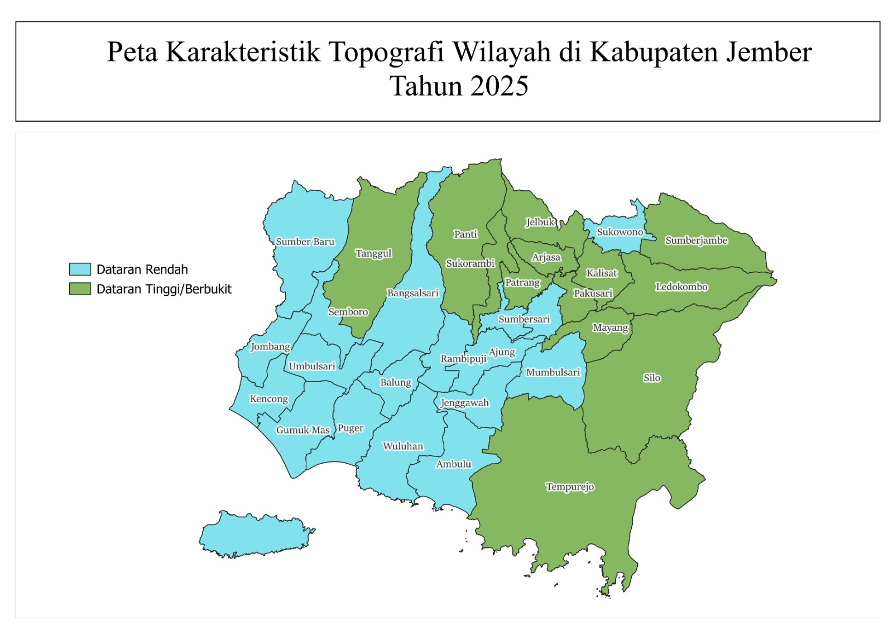
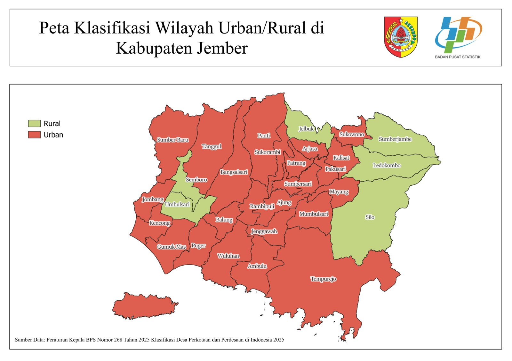
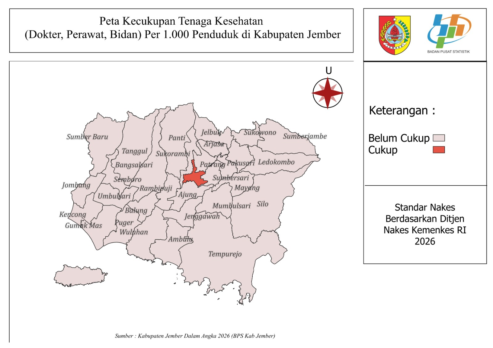
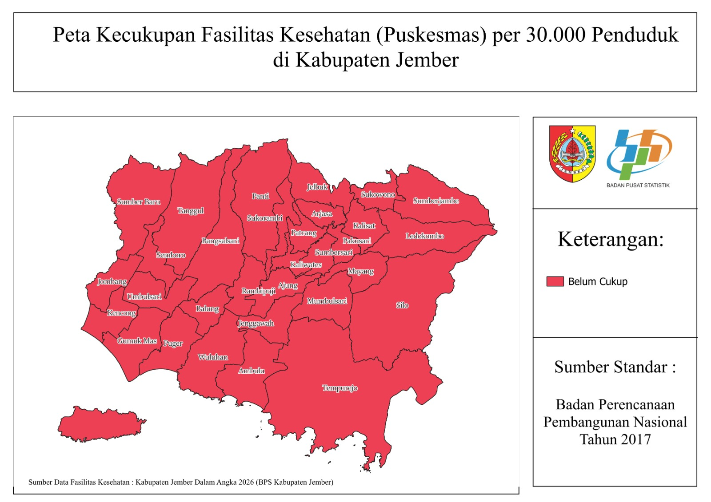

Sebelum melihat data rasio, kenali dulu konteks geografis Kabupaten Jember. Peta berikut menunjukkan
bagaimana 31 kecamatan terbagi berdasarkan karakteristik wilayahnya — dasar dari pengelompokan yang
dipakai pada halaman dashboard selanjutnya.
Peta Karakteristik Topografi Wilayah

18 kecamatan dataran rendah, 13 kecamatan dataran tinggi/berbukit.
Peta Klasifikasi Wilayah Urban / Rural

Dari 31 kecamatan di Kabupaten Jember, terdapat 25 kecamatan yang diklasifikasikan sebagai wilayah urban dan 6 kecamatan yang diklasifikasikan sebagai wilayah rural.
Peta Kecukupan Tenaga Kesehatan (Dokter,Perawat,Bidan)

Berdasarkan hasil pemetaan, sebanyak 30 kecamatan di Kabupaten Jember termasuk kategori “Belum Cukup”, sedangkan 1 kecamatan termasuk kategori “Cukup”.
Peta Kecukupan Fasilitas Kesehatan (Puskesmas)

Seluruh wilayah kecamatan di Kabupaten Jember termasuk dalam kategori “Belum Cukup” dalam pemenuhan fasilitas kesehatan berupa puskesmas berdasarkan perhitungan jumlah puskesmas terhadap jumlah penduduk dengan standar 1 puskesmas per 30.000 penduduk.